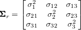
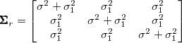
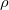
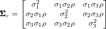
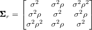
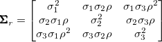
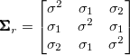

| 縦断データの分析 |
| 縦断データの分析 |
乖離度統計量は、あらゆる誤差共分散構造の中で常に最小になる。
|  |
標準的モデルの特殊ケース。
|  |
自己相関  は共通。 各時点における分散が非等質となるため、共分散も非等質となる。
|  |
自由度を相当節約するが、かなり厳しい制約ではある。
|  |
|  |
自己回帰的であるが、対角成分に対する各帯は同一比に制約されない。
|  |
誤差構造に何を選ぶかに関わらず、固定効果のパラメータ推定値を本質的に変化させることは滅多にない
誤差共分散構造についての仮説を洗練させることは、固定効果の推定精度に影響を与える
| 縦断データの分析 |